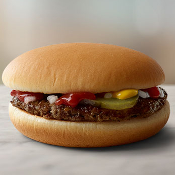
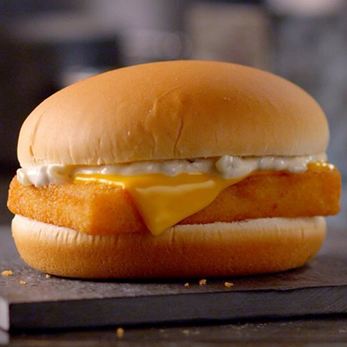

Ми – посланці Рональда з Макдонії. І ми тут, щоб відкрити вам світ найсмачнішої їжі!
Активні макдональчани живуть у скаженому ритмі буднів. Їм завжди потрібно поповнювати запас енергії. І
тому
наша національна кухня – це смачні та соковиті бургери, адже це універсальна страва, яка поєднує овочі,
м’ясо або рибу, злаки та молочні продукти. Наші жителі обирають найкраще:
|
.jpg)
Запашна булочка, смачна котлетка, тягучий сир, шматочок корнішончику та пікантний соус. Ням-ням!
|

Свіжоспечена булочка, соковитий біфштекс, ніжний соус, огірочок та цибулька для хрумкості. Мммм,
смакота!
|

Кругленька булочка, котлетка з рибки у паніровці, маленькі шматочки сиру та екзотичний соус тар-тар.
На любителя!
|
|
.jpg)
Пшенична булочка із сезамом, м’ясиста курочка, свіженький салатик та вишуканий соус. За вуха не
відтягнеш!
|
.jpg)
Подвійна булочка, дві котлетки, соковитий салат, цибулька, огірочок для пікантності та скибочки сиру
Чеддер, заправлені лагідним соусом. Скуштуєш – язик проковтнеш!
|

Пухка булочка, слайси помідорчика, зелений салат та грайливий соус ідеально доповнюють смак
біфштексів із яловичини та плавленого сиру Елементаль. Аж губи злипаються!
|
Насправді, ми провели скажено масштабне дослідження. Кожен бургер ми оцінювали за 12-ма критеріями:
упаковка, зовнішній вигляд, запах, булочка, котлета, соус, овочі, смак, зручність споживання,
калорійність,
склад та загальне враження. Зрештою, ми склали єдиний рейтинг найсмачніших бургерів за нашою
суб’єктивним враженням.